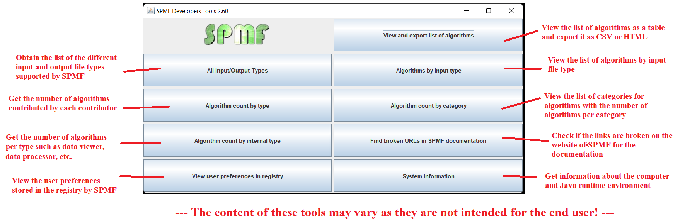

Open the SPMF developers' tools (SPMF documentation)
This example explains how to open the developer's tools window of SPMF.
Note: This is a Window that provides some information that may be useful for the developers of SPMF and is not intended for the end user. For this reason, the content of the developers' tool may change over time.
How to open the developers' tools?
- If you are using the graphical interface of SPMF, (1) choose the "SPMF_developers_tools" algorithm, (2) and then click "Run algorithm".
- If you want to execute this example from the command
line, then execute this command:
java -jar spmf.jar run Open_text_file_with_SPMF_text_editor your_input_file.txt
in a folder containing spmf.jar.
What is this tool?
The developer's tools is a window that gives access to a variety of functions that may be interested for developers of SPMF.
For example, here is a screenshot of the developers' tools of SPMF 2.60, as the time of writing this documentation:
